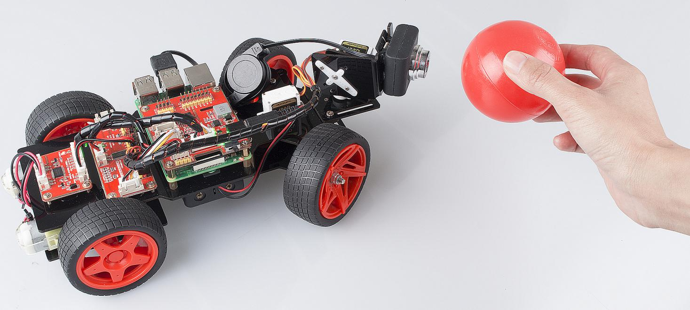
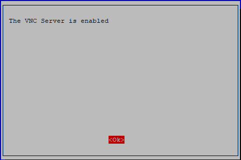
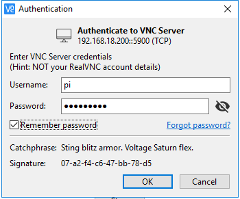
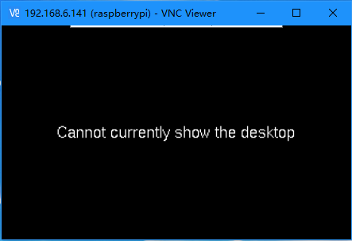
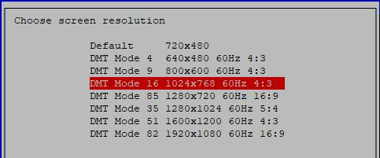
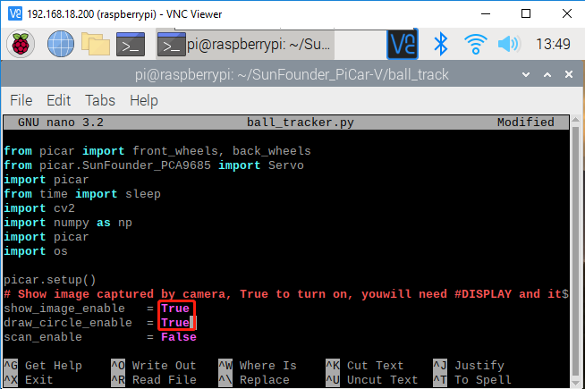

ball_tracker¶
In addition to using the keyboard to control the status of the car, we also wrote a ball tracking code.
sudo apt-get install libatlas-base-dev libjasper-dev libqt4-test libwebp6 libtiff5 libopenexr23
libgstreamer1.0-0 libavcodec-dev libavformat-dev libswscale-dev libqtgui4 -y
sudo pip3 install opencv-python==3.4.6.27
cd ~/SunFounder_PiCar-V/ball_track
python3 ball_tracker.py
After the code runs, find a red ball (at least larger than the diameter of the camera) and put it within 10-50cm range in front of the camera to get the car to follow your ball.
{kind=link}
If you want to know whether the car has catched your ball, you can do as follows:
Step 1: Enable the VNC on the Raspberry Pi.
sudo raspi-config
Choose 3 Interfacing Options by press the down arrow key on your keyboard, then press the Enter key..

P3 VNC

Press the left arrow key on your keyboard to choose Yes.

Finally select OK->Finish to exit the config.
{kind=link}
Step 2: Download the VNC Viewer for your computer and install it.
https://www.realvnc.com/en/connect/download/viewer/
注釈
During your installation on your Windows, if you encounter the following prompt, please click Continue to continue your installation.

Step 3: Open VNC Viewer you have installed, type in your Raspberry Pi IP address, and press the Enter button.

Step 4: Enter the username and password of your Raspberry Pi on this page, by default, they are pi and raspberry; then click OK.
{kind=link}
When you log in with VNC Viewer, the screen may be black.If your screen is working, skip to Step 5.
{kind=link}
Changing the resolution to the highest on the Raspberry Pi.
sudo raspi-config
Choose 2 Display Options.

Choose D1 Resolution.

Change the default to a higher resolution like Mode 16, then click OK.
{kind=link}
Reboot the Raspberry Pi, log in again, and it will work.
sudo reboot
Step 5: Now, we enter the Raspberry Pi desktop, click Terminal and type the following commands to open the code ball_tracker.py.
cd ~/SunFounder_PiCar-V/ball_track
sudo nano ball_tracker.py
Then modify the code as follows:
Show_image_enable = True
Draw_circle_enble = True
Press Ctrl+X and Y to save the change.
{kind=link}
注釈
After you finish doing this step, you must log in the Raspberry Pi via VNC, or you can use a monitor; if not, the warning is as follows:
{kind=link}
Step 6: Run the ball_tracker.py.
python3 ball_tracker.py

Step 7: After running the code ball_tracker.py, these four images will appear. If you place a red ball in front of the camera, you can see a green circle which represents that the car has catched your red ball.